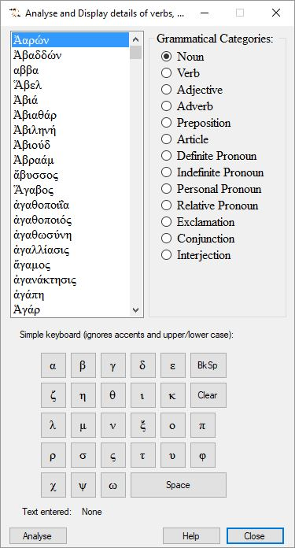
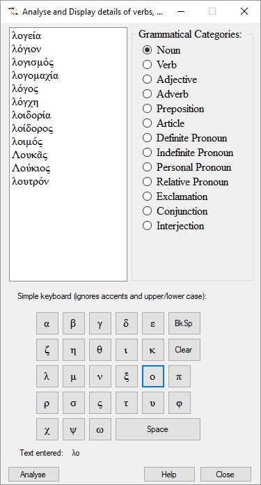
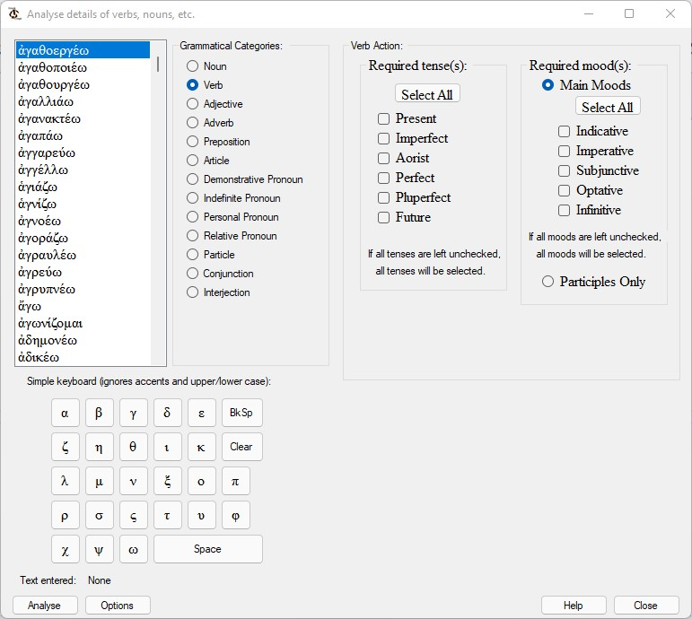
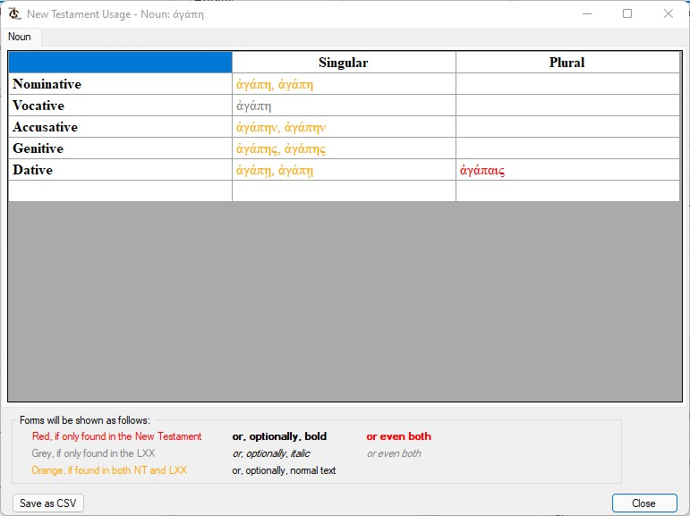
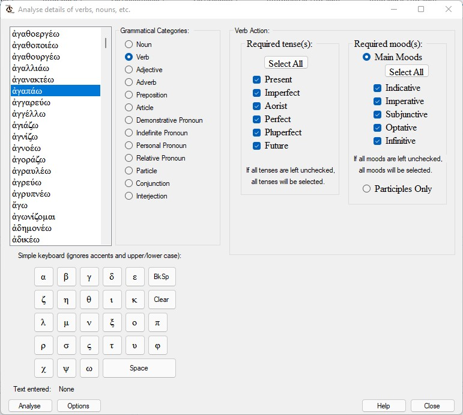
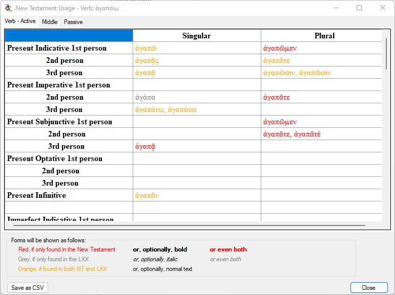
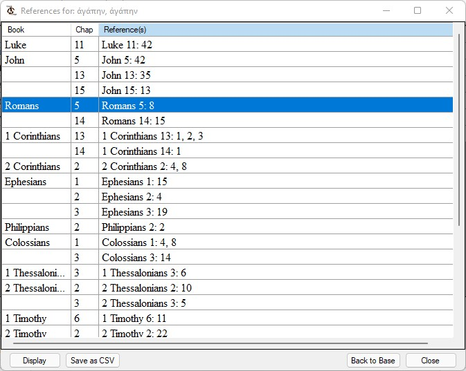
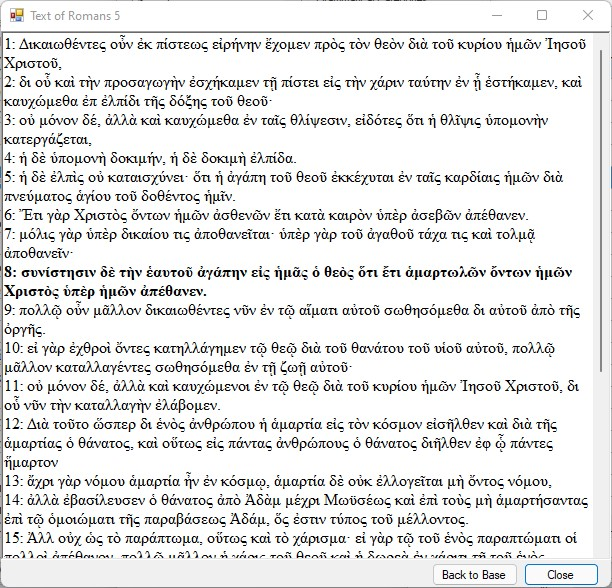
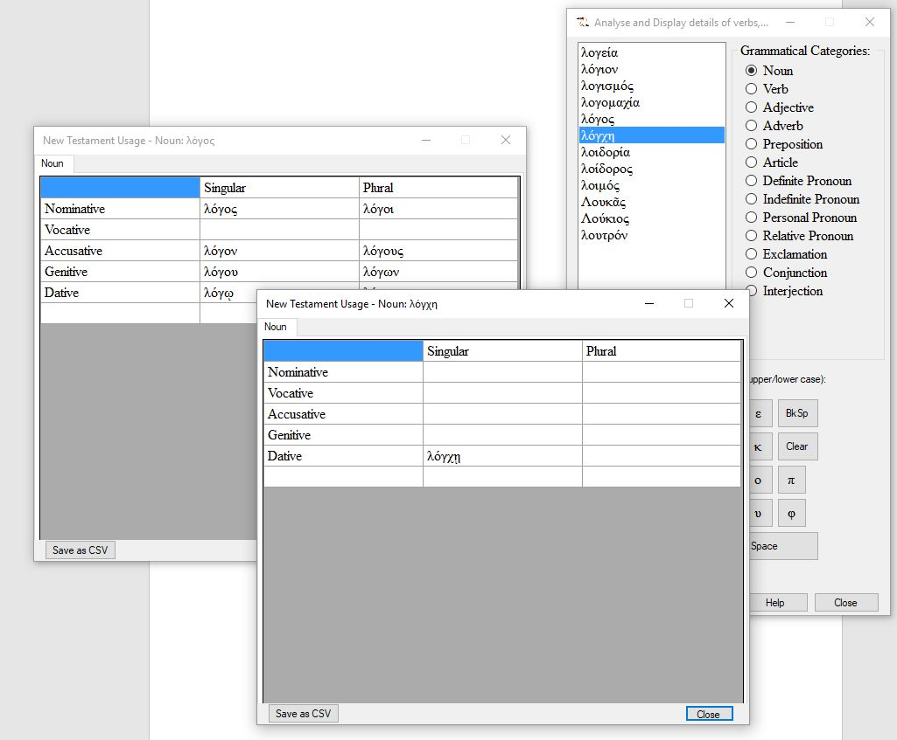
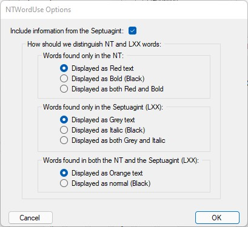

If you have learnt Greek, you will have had to plough your way through various tables that tell you how a specific word works. Nouns not only have gender and belong to one of several classes of nouns, but they also change their form depending on whether they are singular or plural and what role they play in a sentence. The grammatical construct used to describe this last set of variations is case.
So, for example, you will have learned to decline the second declension masculine word, λόγος, and the first declension feminine word, οἰκία, as follows:
| First Declension feminine - οἰκία | Second Declension masculine - λόγος | |||
|---|---|---|---|---|
|
Singular
|
Plural
|
Singular
|
Plural
|
|
| Nominative | οἰκία | οἰκίαι | λόγος | λόγοι |
| Vocative | οἰκία | οἰκίαι | λόγε | λόγοι |
| Accusative | οἰκίαν | οἰκίας | λόγον | λόγους |
| Genitive | οἰκίας | οἰκιῶν | λόγου | λόγων |
| Dative | οἰκίᾳ | οἰκίαις | λόγῳ | λόγοις |
Similarly, verbs conjugate (much as they do in Spanish or German). Verbs are even more complex because they have different tenses (much as English, such as present, imperfect or future), moods (e.g. indicative, imperative, subjunctive) and voice (active, passive and a rather confusing middle).
The text books provide idealised tables of nouns, verbs and adjectives, sometimes showing forms that would be used if they existed in the text. So, NTWordUse allows you to display similar tables of declensions and conjugasions as they actually occur in the New Testament. We hope that this will be of help to students in learning New Testament Greek but also as a research tool, to see how a word is not used as well as how it is used.
As an extra aid, usage in the Septuagint (LXX) has been (optionally) added. So, if a word is used in the NT, you can see how it is used in both bodies of work, should you choose.
When you start NTWordUse, after a short period where it initialises itself and asks you to be patient, you will be faced with a fairly busy, small window:

This is made up of three areas:
Let's explain each of these areas:
You'll see in the screenshot that the category, noun, has been selected. As a result, the word list will contain only nouns. The list, by default, will contain all the nouns used in the New Testamant. We'll explain what you do with this list in a moment.
It is hoped that these are fairly obvious. Selecting a different category will refresh the word list with all the words in the New Testament belonging to that category.
(We're putting the word, keyboard, in quotes because it barely qualifies as a keyboard but it is a way of easily enteing Greek characters without you having to install a second keyboard on your PC.)
Because the word lists are every word in a given category, you will often want to narrow the list down. This "keyboard" allows you to do that.
Suppose, for example, that you want to investigate the use of λόγος. To reduce the size of the list, we can type the letter λ:
Well, that helped but it's still a sizable list, so let's add ο (note: we won't bother with the accent):

Now the list is a manageable size and I can easily select the word I'm interested in.
Note also that we can keep track of what we've typed in the text below the "keyboard". If we press the clear button or change the grammatical category, the buffer containing our preselection text will be cleared and we will see the full list once again.
As we have already mentioned, verbs are more complex than other grammatical categories and we need to mention what happens if you select the category, verb. The main window will expand to provide additional options:

NTWordUse has added some options to the right of the normal window and expanded the window so that you can see them. You can choose to view one or more tenses. If you select no tenses,when you analyses the selected word, the application assumes that you want to look at everything and fills all the tenses in for you. Similarly, you can choose one or more moods. Again, if you choose no moods, all will be selected (except participles).
You can also investigate participles (ordered by tense) but you cannot look at them at the same time as other moods. This is because the other parts of the verb conjugate but a participle effectively declines.
Once you have selected the correct grammatical category, required tense(s) and mood(s) (in the case of verbs), you can select the specific word in the word list that you want to analyse and then click on the Analyse button. (Alternatively, you can double click on the selected word - but make sure it is selected.) This will open a second window which provides detail on the word.
Let's take the first declension feminine noun, ἀγάπη, as an example. Once we've selected the word, analysing it will result in the following window:

The different colours are indicators of the roll played by the LXX as well as the NT. (Just in case you need reminding when using the utility, there is a kind of "key" near the bottom of the window.) The colours of the following significance:
Note, however, that some of the possibilities are blank. This means that not used in either NT or LXX, so it doesn't occur in our analysis.
If we had chosen a verb, the analysis would inevitably have been a little more complex. Consider the verb ἀγαπάω:

Our analysis window would look something like this:

Now, there's more of it because we've included all tenses and moods. Notice also that there are several tabs at the top of the window. By default we show the active voice but you can select other voices simply by clicking on the relevant tab. (Note: normally, one or more of the tabs will give a completely blank analysis: if there are no middle uses of the verb, for example, then it will be blank.)
Note also that deponent verbs will be reported as middle.
Clicking on the Save as CSV button will allow you to save the analysis of the specific word as a tab-delimited file. You will be prompted with a normal Save As ... dialog. Make sure you remember where you are putting the resulting file so that you can retrieve it later. The idea is that you can load the analysis into another application of your choice.
You need to be aware that the analysis will be saved in Unicode (UTF8) format and, so, any application into which you import the file must be able to work with this format. For example, you cannot simply load it into Excel by double clicking (because that doesn't recognise the tabs but it also won't recognise UTF8), but you can import it through the Data tab (then Get External Data).
If you select a specific form of the amalysed word and right click on it, you will be provided with a list of all the occurrences of that form in the New Testament.
For example, we have analysed ἀγάπη. If we do so again and right click on the accusative singular form, ἀγάπην, and we see this:

In exactly the same way as before, you can save this list as a tab-delimited file. Click on the Save as CSV button.
We haven't really discussed the various close buttons - because they normally do exactly what you would expect. However, we are so far down the tree of activity that we have provided a means of closing all the windows back to the first window: clicking on Back to base will do exactly that.
If you highlight a particular chapter and then click on the Display button, NTWordUse will open one more window with the text of the whole chapter:

You can resize this window to suit.
Note that all verses that contain the specific form of your selected word are displayed in bold text. You also have the Back to base option at this level.
At all levels (other than the base window) you can return to earlier windows without closing the latest window and you can open a second, third, etc. window:

This has been provided deliberately so that you can easily make comparisons across categories. Be aware, though, that opening lots of windows can make your screen a bit difficult to manage and the Back to base option may not remove all the windows that you have opened.
You may have been muttering to yourself, "The colours are all well and good but they won't help some people who have specific problems with colour." We have provided the ability to change the way the different categories of words are displayed. Clicking on the Options button on the main form will take you to this dialog:

In particular, you can change the different categories of results to bold, italic and normal (black) text .
Note also that, if you really don't like the involvement of the Septuagint in everything, you can choose simply to use only NT data. Unselecting the top option will remove all signs of LXX involvement in the analysis.
These options will be saved to disk and will be remembered for future sessions of the application.
The application is provided for free use. This can only be done because so much is now available in the public domain. But that doesn't mean that we can simply ignore the efforts that have gone into producing the data in usable form or even, in some instances, the intellectual property contained in the data.
The Greek text of the New Testament that is used here is derived from text that (I understand) is ultimately traced back to CCAT (The Center for Computer Analysis of Texts) at Pensylvania University - although this itself was based on efforts of a number of pioneers (see the article at https://www.sbl-site.org/publications/article.aspx?ArticleId=246 for example). More directly, it seems to have been the responsibility of SBL ( which is still copyright of the Society of Biblical Literature - see http://www.sbl-site.org) although, as far as I can see, it is essentially Westcott & Hort. Although I find it morally doubtful to claim copyright on the Greek text of the New Testament (as opposed, for example, to critical appendices and textual analysis), I am happy to acknowledge the enormous amount of work done over the years.
As implied by some of these comments, so many variations in presentation now exist on the internet that it is difficult to be precise about where some of it has come from and what path it has taken. A practical implication is that it doesn't do away with your need to use an up-to-date version that represents modern scholarship: you will find some words used in the text are now considered, at best, less likely varients.
One further name that needs to be mentioned is James Tauber. He has done an amazing job in providing a well-constructed parsed version that has been invaluable. You can see some details at http://jtauber.com/new_testament_greek and you can learn more of him and his work from there.
In developing the application, we have identified some errors in the parsing of words in the LXX data. It was only a handful of words but there are likely to be other errors that did not show up in our analysis. Be aware that there may be such errors and make independent checks when basing decisions on this analysis. Our aim is to make the process of learning Greek and using the language more straightforward, but there is never a replacement for consulting good texts, lexicons commentaries and other source materials.
So, if you encounter any problems or wanmt to let us know about any errors you discover, please contact us at the email address below:
Make sure you include the name of the application and the version, as provided in the About option.
I studied Physics at London University (Bedford College - alas, no more), Biblical Studies at Manchester University and Theology at Oxford University. I have had a love affair with computers since my physics studies in 1968 and, more specifically, started working on Biblical texts and the computer at Manchester in 1979, when working for an MA. I've spent several years recently developing this and some related applications in an attempt to make the most of publically available information.
This software is free. I'm too lazy to put together a properly formed licence agreement but the usual open source stuff applies, limited only by any claims by originators of source data.
I hope you find this useful.
Len Clark